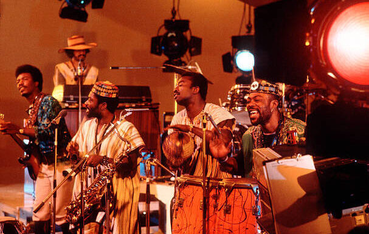

Introduction
 Highlife is a genre that originated in Ghana in the early 20th century, blending African rhythms with Western musical instruments and traditions. It is known for its lively beats and vibrant brass sounds.
It encompasses multiple local fusions of African metre and western jazz melodies. It uses the melodic and main rhythmic structures of traditional African music, but is typically played with Western instruments. Highlife is characterized by jazzy horns and guitars which lead the band and its use of the two-finger plucking guitar style that is typical of African music. Recently it has acquired an uptempo, synth-driven sound.
History
Highlife emerged during the colonial period in Ghana, influenced by Western military bands and African traditional music.
The genre gained popularity in the 1950s and 60s as Ghana and Nigeria experienced cultural growth post-independence.
Over time, Highlife evolved to incorporate jazz, funk, and reggae influences.
Evolution of Highlife
In the 1970s, the genre incorporated electric instruments, leading to a subgenre known as "Guitar-band Highlife." Later, elements of Highlife influenced Afrobeat and Hiplife in contemporary African music.
Notable Artists
E.T. Mensah
A pioneer of Highlife music, often called the King of Highlife.
Emmanuel Tettey Mensah (31 May 1919 - 19 July 1996),was a Ghanaian musician who led The Tempos, a band that toured widely in West Africa. He co-starred on a highly successful album with the Nigerian trumpeter Dr Victor Abimbola Olaiya.
Osibisa
Internationally acclaimed band that popularized Highlife fusion.
Osibisa was the most successful and longest lived of the African-heritage bands in London, alongside such contemporaries as Assagai, Chris McGregor's Brotherhood of Breath, Demon Fuzz, Black Velvet, and Noir, and was largely responsible for the establishment of world music and Afro-Rock as a marketable genre.
Notable Songs
| Artist/Band | Notable Song | Country |
|---|---|---|
| E.T. Mensah | All For You | Ghana |
| Osibisa | Sunshine Day | Ghana/UK |
| Daddy Lumba | Enko Den | Ghana |
Explore more artists
Other influential Highlife artists include Pat Thomas, Victor Olaiya, and the Ramblers Dance Band, who significantly shaped the genre in West Africa.